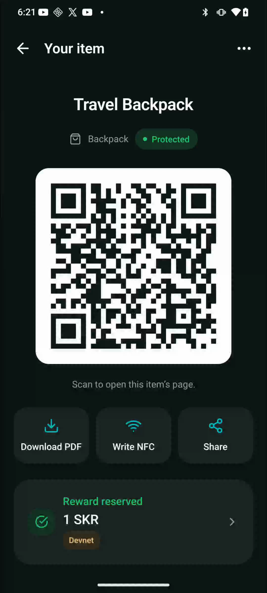

SeekerTag / CLOCK IN 2026
What is yours. Back to you.
A private return channel that connects owners and finders — with rewards secured on Solana.
LESS LOST. MORE FOUND.

Someone found your item.A new private message is waiting for you.
Found this item?Scan in the SeekerTag app
01 / CONNECTED BY KINDNESS